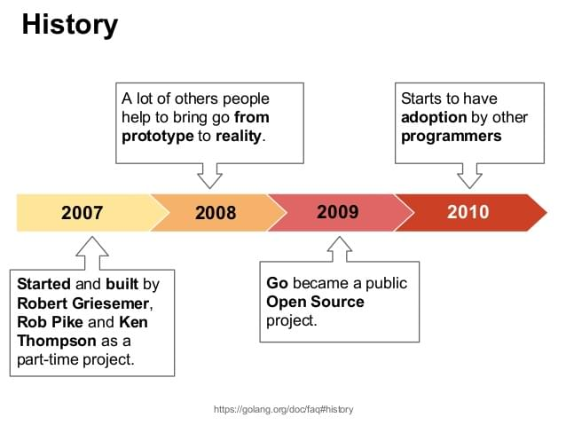
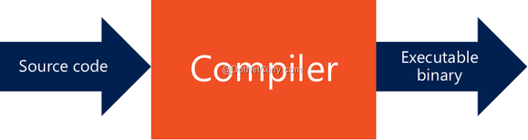
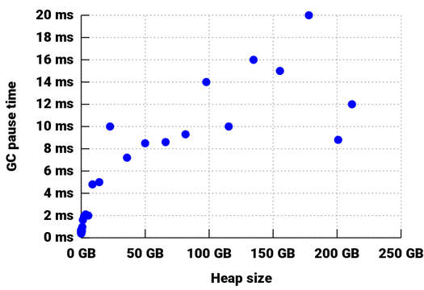
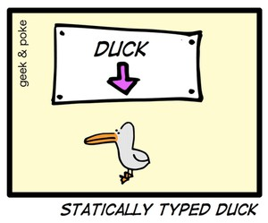
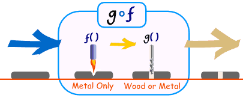
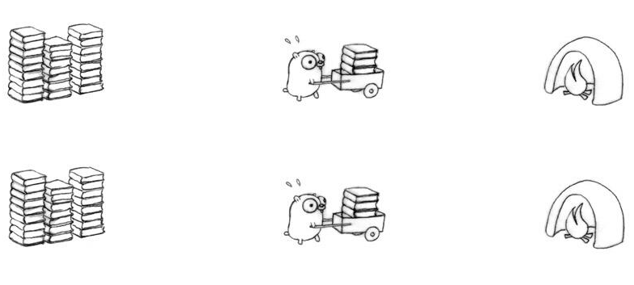

Alô, chào toàn thể anh em, vốn bản tính tò mò yêu thích những cái mới kể từ hôm nay mình sẽ quết định học thêm một ngôn ngữ backend nữa, sau một hồi cân nhắc mình quết định đi sâu hơn vào Go một ngôn ngữ phát triển bởi Google, để mở đầu cho loạt bài này bài viết hôm nay mình sẽ giới thiệu tổng quan của ngôn ngữ này cũng như những nhận xét ban đầu của bannr thân mình khi lần đầu được tiếp xúc và trải ngiệm ngôn ngữ này,
Go là gì?
Go hay Golang là một ngôn ngữ lập trình biên dịch, được Googke thiết kế từ cuối năm 2007 và trở thành một ngôn ngữ mã ngồn mở năm 2009 với sự đóng góp của Google cũng như cộng đồng mã nguồn mở hiện nay phiêm bản mới nhất của Go đang là 1.7.

Go Để làm Gì?
Được phát triển bởi Google Go sinh ra để giait quết các vấn đề cuả Google:
- Những ứng dụng yêu cầu mở rộng rất lớn
- Yêu cầu tốc độ xử lý nhanh
- Hệ thống phân tán
- Hệ thống phần cứng nhiều lõi
- network computing
để có thể giải quết tốt các vấn đều trên các nhà phát triển ngôn ngữ này đã thiết kế nên mộtj loạt các tính năng tuyện vời.
các đặc điểm ngôn ngữ
sự đơn giản - Less is more
nếu bạn mon muốn một nguôn ngữ quền năng như thế này:
thì có lẽ Go sẽ làm bạn thất vọng, bởi vì Go chỉ có hơn thế này một chút thôi:
lần đọc tiếp xúc với ngôn ngữ này ắt hẳn bạn sẽ nghĩ liệu đây có phải là một bạn nâng cấp của ngôn ngữ C, thậm chí nó còn không có hướng đối tượng như C++ 😄.
Không giống như những ngôn ngữ hiện đại Go không có khái nhiệm lớp, đối tương hay thừa kế, Go chỉ có một vài tính năng chủ yếu như hàm, interface, chanel, struct… với sự đơn giản đến khó tin của mình Go lại mạng trong mình sức mạnh không hề thua kém về tốc độ thực thi cũng cấu trức mạch lạc nhất là với các hệ thống lớn.
Bộ công cụ built-in tuyệt vời
Song song cùng phát triển các tính năng ngôn ngữ các nhà phát triển Go cũng rất cong phu trong việc phát triển các bộ công cụ kèm theo như công cụ dòng lệnh Go comand với một loạt các tính năng: package manager, unit testing, application build…, Godoc công cụ viết document, Gofmt công cụ coding covention, Gofix công cụ tự đọng fix lỗi API của các phiên bản trước, và còn nhiều công cụ nữa giúp cho nhà phát triển dễ dàng nhất để tạo ra những sản phẩm có chất lượng tốt trong một thời gian ngắn.
biên dịch nhanh - thuần mã máy

nếu như bạn đã sử dụng java hay C++ thì có lẽ công việc nhàm chán nhất chính là đợi chương trình dịch dành mã máy (hoặc bytecode) với go thời gian đó được rút ngắn đáng kể. Giống như C hay C++ chương trình Go dược dịch thẳng sang mã máy mà không cần chạy qua một máy ảo nào cả điều đó cũng có nghĩa tốc đọ tính toán được gia tăng.
garbage collector tốt

Một trong những thứ Go làm rất tốt đó chính là garbage collector, biểu đò trên lấy từ GoerCon 2016 thể hệ độ hiệu uqar tuyệt vời của Go garbage collector. như biểu đồ trên thì garbage collector chỉ mất 10ms để thu hồi 100GB và 12ms để thu hồi 200GB Heap. thật tuyệt vời đúng không nào.
Định kiểu chặt chẽ

Go là một ngôn nhữ yêu cầu rất cao với kiểu dữ liệu. ví dụ với kiểu số ta có int, int32, int64 nhìn chung thì việc này sẽ giúp cho giảm lỗi runtime nhưng đôi khi cũng hơi hoa mắt với những đoạn ép kiểu qua lại nhằng nhằng.
Giao diện và bao gói

không giốp như OOP trong Go không có class đề bao gói, thay vào đó là package và struct. một loạt các biến hay hàm mà có tên viết hoa chữ cái đầu sẽ là public còn nếu không sẽ là thuộc tính private. ngoài ra Go cũng hỗ trợ tính đa hình bằng cách ử dụng interface, một struct có thể đồng thời niều interfaace khác nhau.
lập trình đồng thòi

khá giống với thread trong java nhưng Concurrentcy trong Go rấ dễ sử dụng và nhẹ nhàng hơn nhiều, cho phép sử lí các tác vọ ddoonhf bộ với nhau. Go cung cấp hai cách đó là chanel và go.
writen by @minhlv with ❤️